MineCraft管理器
MineCraft Recording Program
简介
MineCraft管理器，Github中已经开源，名字为：MineCraft_Recording_Program。本管理器持续更新，版本2.0.0后， 管理器创建的项目已经可以持续兼容了。（但是请注意：2.0.0版本之前，版本没有自动更新功能，项目一般不兼容，不建议使用）。
MineCraft管理器，致力于帮助MineCraft的玩家（特别是Java版的玩家）记录信息，并且制造相应模组。 本人希望听到用户的反馈，若有能力，可以在Github中的issues中进行反馈
菜单
日志功能
坐标记录功能
计划表及正在做功能
铁路地图绘制功能
其他功能
常见问题
日志功能
日志功能是用来记录每一天所做的事情的，可以在以后查看是什么时候完成的。计划添加插入图片功能。
使用本功能之前请先创建项目
如何创建项目？点我
使用方法：
1. 创建一个日志，日志以天为单位
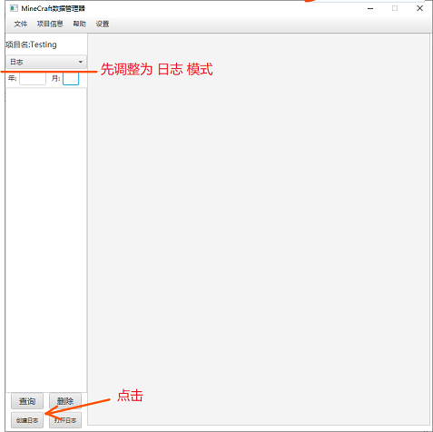
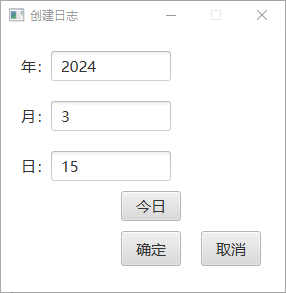
点击“今日”字样的按钮可以自动填充今日的日期，若手动填写日期，则可以填写今日以前的日期
2. 搜索日志并选择
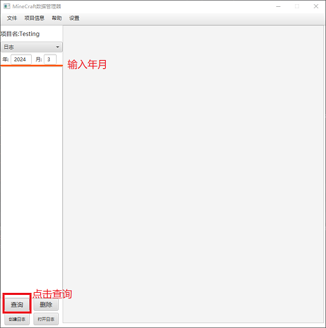
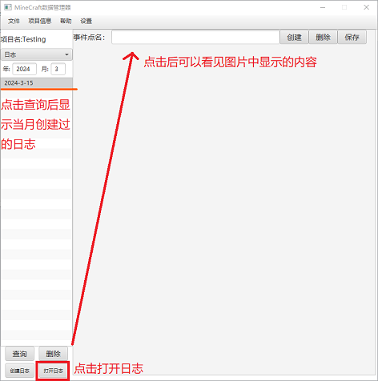
3. 创建内容
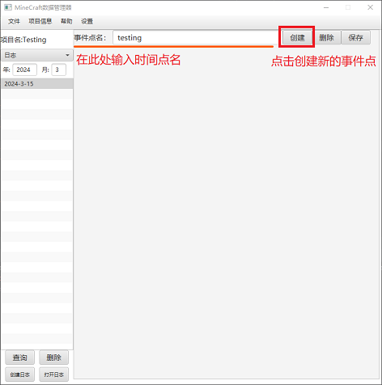
4. 删除内容
点击页面最上方的删除按钮，在弹出的窗口中选定要删除的事件点就可以删除了
5. 保存内容
本程序不设有自动保存，所以在编辑完毕之后请务必进行保存！！！
坐标记录功能
坐标记录功能是用来记录坐标的，解放脑袋，适合探索发展形的玩家使用。计划添加相应模组功能（游戏内修改坐标、传送坐标）。
坐标组记录是以坐标组为大单位，坐标为小单位来记录的
使用本功能之前请先创建项目
如何创建项目？点我
使用方法：
1. 创建坐标组
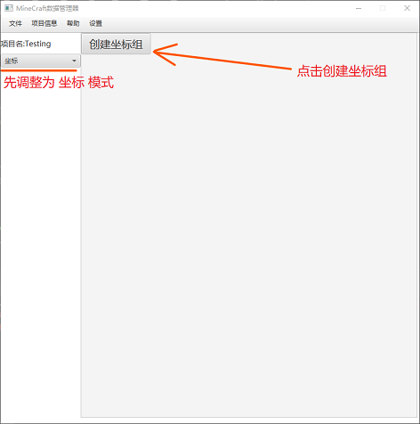
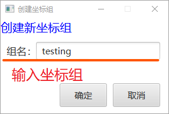
如果创建成功，屏幕会显示如下：
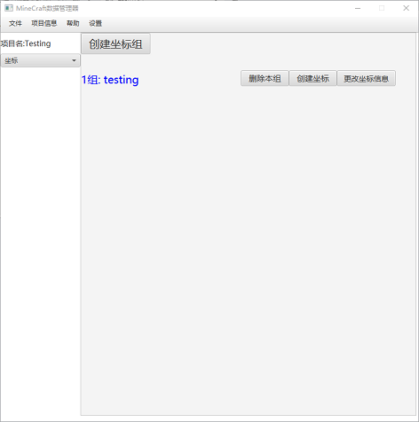
2. 删除坐标组
在要删除的坐标组的旁边的“删除本组”按钮，即可删除
3. 创建坐标
请分清“坐标”和“坐标组”，坐标是坐标组以下的区分登记
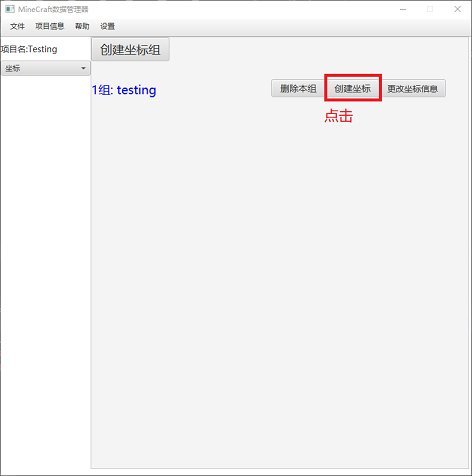
在以下窗口中填写入相应信息
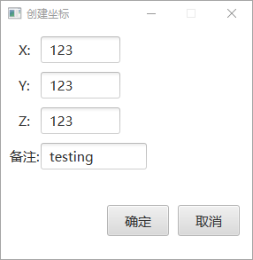
点击完成后窗口即可显示如下所示：
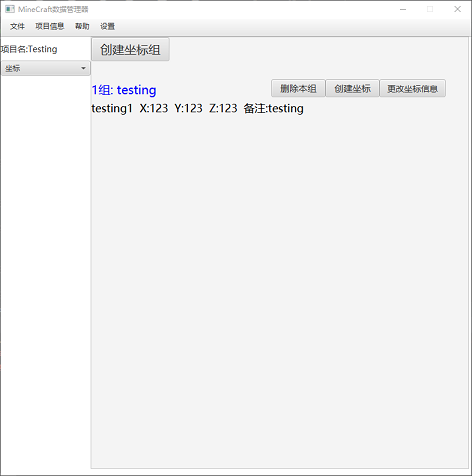
4. 更改坐标信息
找到要更改坐标所属的坐标组
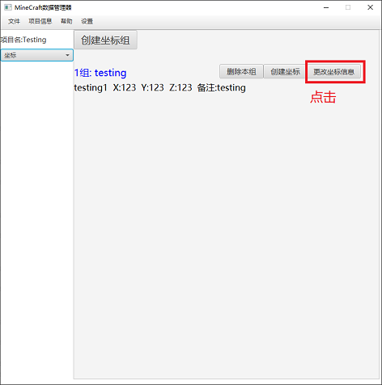
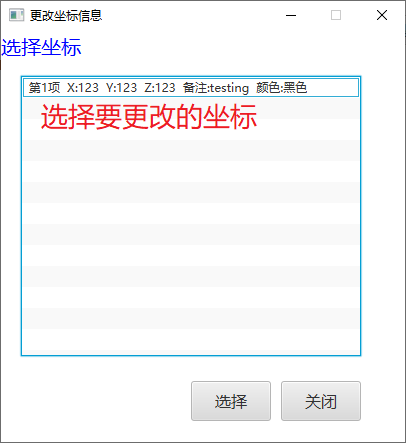
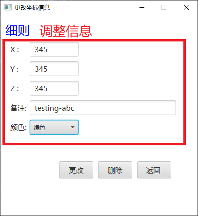
完成后如下所示：
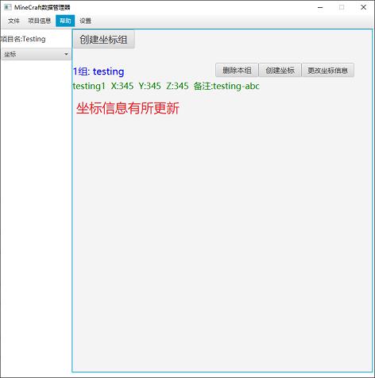
5. 删除坐标
重复第三步步骤，打开坐标“细则”界面
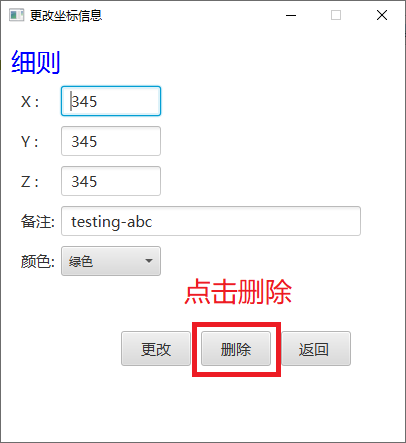
删除成功后，屏幕上的相应坐标会消失，如下：
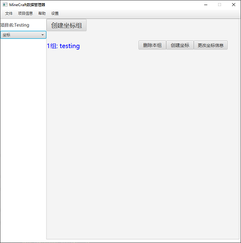
计划表及正在做功能
这一个功能非常适合有时间控或者准备控的人使用。“正在做”可以记录现在正在做的事情，“计划表”可以写入计划内容，并且在完成一个步骤的时候点击变成绿色
使用本功能之前请先创建项目
如何创建项目？点我
正在做部分
1. 打开正在做
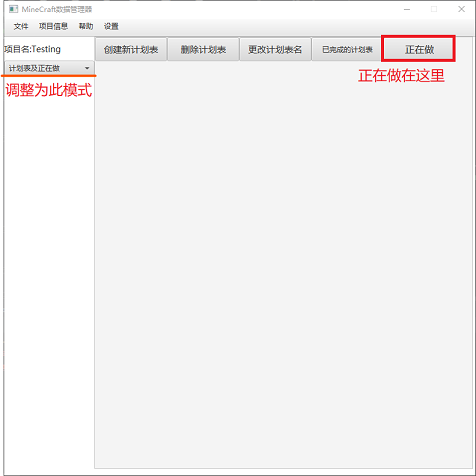
如图，即是正在做的窗口：
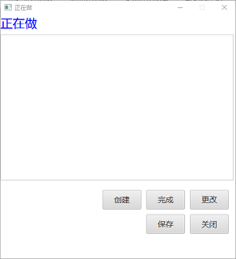
2. 正在做相应操作
各位客官都知道如何操作了，本人在此就不再赘述了
计划表部分
1. 创建计划表
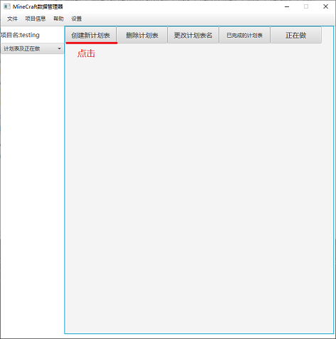
在打开窗口中填入要创建的计划表的名称，然后点击确认
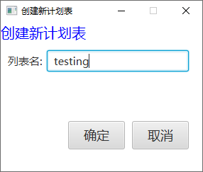br>
在主窗口中会出现类似如下
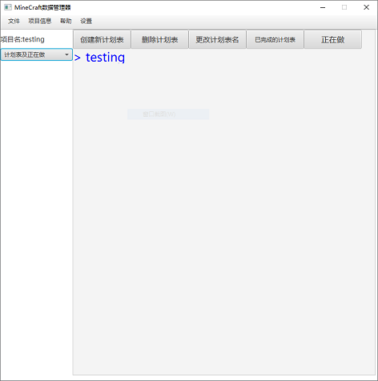
将鼠标置于字上，字会变色，点击即可进入，点击如下
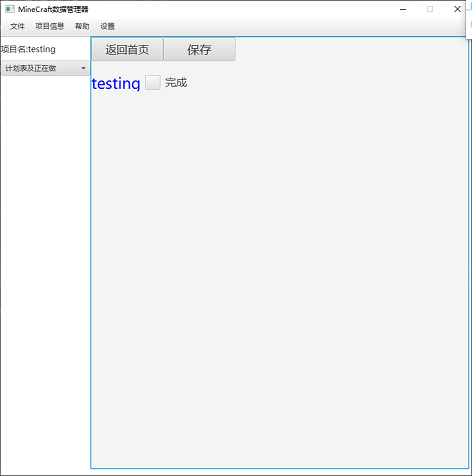
2. 返回首页
直接点击“返回首页”按键即可
3. 保存
点击“保存”按钮会保存，如果遇到错误，可以弹出窗口；兜底措施是在点击”返回首页“按钮时会被动保存
铁路地图绘制功能
本人不想做指引了，有问题可以在issues中提出
其他功能
常见问题
更新时间：2024-04-01